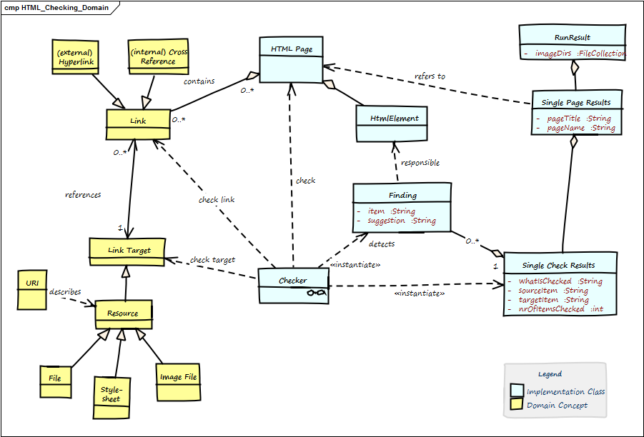

1. Technical and Crosscutting Concepts
1.1. HTML Checking Domain Model

Figure 1. HTML Checking Domain Model
| Term | Description |
|---|---|
Anchor |
Html element to create →Links. Contains link-target in the form |
Cross Reference |
Link from one part of the document to another part within the same document. A special form of →Internal Link, with a →Link Target in the same document. |
External Link |
Link to another page or resource at another domain. |
Finding |
Description of a problem found by one →Checker within the →Html Page. |
Html Element |
HTML pages (documents) are made up by HTML elements .e.g., |
Html Page |
A single chunk of HTML, mostly regarded as a single file. Shall comply to standard HTML syntax. Minimal requirement: Our HTML parser can successfully parse this page. Contains →Html Elements. Also called Html Document. |
id |
Identifier for a specific part of a document, e.g. |
Internal Link |
Link to another section of the same page or to another page of the same domain. Also called Local Link. |
Link |
Any a reference in the →Html Page that lets you display or activate another part of this document (→Internal Link) or another document, image or resource (can be either →Internal (local) or →External Link). Every link leads from the Link Source to the Link Target |
Link Target |
The target of any →Link, e.g. heading or any other a part of a →Html Document, any internal or external resource (identified by URI). Expressed by →id |
Local Resource |
local file, either other Html files or other types (e.g. pdf, docx) |
Run Result |
The overall results of checking a number of pages (at least one page). |
Single Page Result |
A collection of all checks of a single →Html Page. |
URI |
Universal Resource Identifier. Defined in RFC-2396. The ultimate source of truth concerning link syntax and semantic. |
1.2. Gradle Plugin Concept and Development
You should definitely read the original Gradle User Guide on custom plugin development.
To enable the required Gradle integration, we implement a lean wrapper as described in the Gradle user guide.
class HtmlSanityCheckPlugin implements Plugin<Project> {
void apply(Project project) {
project.task('htmlSanityCheck',
type: HtmlSanityCheckTask,
group: 'Check')
}
}1.2.1. Directory Structure and Required Files
|-htmlSanityCheck | |-src | | |-main | | | |-org | | | | |-aim42 | | | | | |-htmlsanitycheck | | | | | | | ... | | | | | | |-HtmlSanityCheckPlugin.groovy // (1) | | | | | | |-HtmlSanityCheckTask.groovy | | | |-resources | | | | |-META-INF // (2) | | | | | |-gradle-plugins | | | | | | |-htmlSanityCheck.properties // (3) | | |-test | | | |-org | | | | |-aim42 | | | | | |-htmlsanitycheck | | | | | | | ... | | | | | | |-HtmlSanityCheckPluginTest |
-
the actual plugin code:
HtmlSanityCheckPlugin.groovyandHtmlSanityCheckTask.groovygroovy files -
Gradle expects plugin properties in
META-INF -
property file containing the name of the actual implementation class:
implementation-class=org.aim42.htmlsanitycheck.HtmlSanityCheckPlugin
1.2.2. Passing Parameters From Buildfile to Plugin
To be done
1.2.3. Building the Plugin
The plugin code itself is built with gradle.
1.2.4. Uploading to Public Archives
1.2.5. Further Information on Creating Gradle Plugins
Although writing plugins is described in the Gradle user guide, a clearly explained sample is given in a Code4Reference tutorial.
1.3. Flexible Checking Algorithms
HtmlSC uses the template-method-pattern to enable flexible checking algorithms:
The Template Method defines a skeleton of an algorithm in an operation, and defers some steps to subclasses.
— https://sourcemaking.com/design_patterns/template_method
We achieve that by defining the skeleton of the checking algorithm in one operation, deferring the specific checking algorithm steps to subclasses.
The invariant steps are implemented in the abstract base class, while the variant checking algorithms have to be provided by the subclasses.
Template method "performCheck"
/**
** template method for performing a single type of checks on the given @see HtmlPage.
*
* Prerequisite: pageToCheck has been successfully parsed,
* prior to constructing this Checker instance.
**/
public SingleCheckResults performCheck( final HtmlPage pageToCheck) {
// assert non-null htmlPage
assert pageToCheck != null
checkingResults = new SingleCheckResults()
// description is set by subclasses
initCheckingResultsDescription()
return check( pageToCheck ) // <1> delegate check() to subclass
}
Figure 2. Template-Method Overview
| Component | Description |
|---|---|
Checker |
abstract base class, containing the template method check() plus the public method performCheck() |
checks if referenced local image files exist |
|
checks if there are image tags without alt-attributes |
|
checks if cross references (links referenced within the page) exist |
|
checks if any id has multiple definitions |
|
checks if referenced other resources exist |
|
checks if external links are valid |
|
checks if links do not violate HTML link syntax |
1.3.1. MissingImageFilesChecker
Addresses requirement R-1.
Checks if image files referenced in <img src="someFile.jpg"> really exists on the local file system.
The (little) problem with checking images is their path: Consider the following HTML fragment (from the file testme.html):
<img src="./images/one-image.jpg">This image file ("one-image.jpg") has to be located relative to the directory containing the corresponding HTML file.
Therefore the expected absolute path of the "one-image.jpg" has to be determined from the absolute path of the html file under test.
We check for existing files using the usual Java API, but have to do some directory arithmetic to get the absolutePathToImageFile:
File f = new File( absolutePathToImageFile );
if(f.exists() && !f.isDirectory())1.3.2. MissingImgAltAttributeChecker
Addresses requirement R-6.
Simple syntactic check: iterates over all <img> tags to check if the image has an alt-tag.
1.3.3. BrokenCrossReferencesChecker
Addresses requirement R-2.
Cross references are document-internal links where the href="link-target" from the html anchor tag has no prefix like +http, https, ftp, telnet, mailto, file and such.
Only links with prefix # shall be taken into account, e.g. <a href="#internalLink">.
1.3.4. DuplicateIdChecker
Addresses requirement R-4.
Sections, especially headings, can be made link-targets by adding the id="#xyz" element, yielding for example html headings like the following example.
Problems occur if the same link target is defined several times (also shown below).
<h2 id="seealso">First Heading</h2>
<h2 id="seealso">Second Heading</h2>
<a href="#seealso">Duplicate definition - where shall I go now?</a>1.3.5. MissingLocalResourcesChecker
Addresses requirement R-3.
Current limitations:
Does NOT deep-checking of references-with-anchors of the following form:
<a href="api/Artifact.html#target">GroupInit</a>containing both a local (file) reference plus an internal anchor #target
See issues #252 (false positives) and #253 (deep links shall be checked)
1.3.6. BrokenHttpLinksChecker
Addresses requirement R-9.
Problem here are networking issues, latency and HTTP return codes. This checker is planned, but currently not implemented.
1.3.7. IllegalLinkChecker
Addresses requirement R-5.
This checker is planned, but currently not implemented. :jbake-status: draft :jbake-order: -1 :jbake-type: page_toc :jbake-menu: - :jbake-title: Encapsulate HTML Parsing
1.4. Encapsulate HTML Parsing
We encapsulate the third-party HTML parser (https://jsoup.org) in simple wrapper classes with interfaces specific to our different checking algorithms.
1.5. Flexible Reporting
HtmlSC allows for different output formats:
-
formats (HTML and text) and
-
destinations (file and console)
The reporting subsystem uses the template method pattern to allow different output formats (e.g. Console and HTML). The overall structure of reports is always the same:
Graphical clients can use the API of the reporting subsystem to display reports in arbitrary formats.
The (generic and abstract) reporting is implemented in the abstract Reporter class as follows:
/**
* main entry point for reporting - to be called when a report is requested
* Uses template-method to delegate concrete implementations to subclasses
*/
public void reportFindings() {
initReport() // (1)
reportOverallSummary() // (2)
reportAllPages() // (3)
closeReport() // (4)
}
//
private void reportAllPages() {
pageResults.each { pageResult ->
reportPageSummary( pageResult ) // (5)
pageResult.singleCheckResults.each { resultForOneCheck ->
reportSingleCheckSummary( resultForOneCheck ) // (6)
reportSingleCheckDetails( resultForOneCheck ) // (7)
reportPageFooter() // (8)
}
}-
initialize the report, e.g. create and open the file, copy css-, javascript and image files.
-
create the overall summary, with the overall success percentage and a list of all checked pages with their success rate.
-
iterate over all pages
-
write report footer - in HTML report also create back-to-top-link
-
for a single page, report the nr of checks and problems plus the success rate
-
for every singleCheck on that page, report a summary and
-
all detailed findings for a singleCheck.
-
for every checked page, create a footer, page break or similar to graphically distinguish pages between each other.
1.5.1. Styling the Reporting Output
-
The
HtmlReporterexplicitly generates css classes together with the html elements, based upon css styling re-used from the Gradle JUnit plugin. -
Stylesheets, a minimized version of jQuery javascript library plus some icons are copied at report-generation time from the jar-file to the report output directory.
-
Styling the back-to-top arrow/button is done as a combination of JavaScript plus some css styling, as described in https://www.webtipblog.com/adding-scroll-top-button-website/.
1.5.2. Copy Required Resources to Output Directory
When creating the HTML report, we need to copy the required resource files (css, JavaScript) to the output directory.
The appropriate copy method was re-used from the Gradle sources.
1.5.3. Attributions
Credits for the arrow-icon https://www.iconfinder.com/icons/118743/arrow_up_icon
Feedback
Was this page helpful?
Glad to hear it! Please tell us how we can improve.
Sorry to hear that. Please tell us how we can improve.